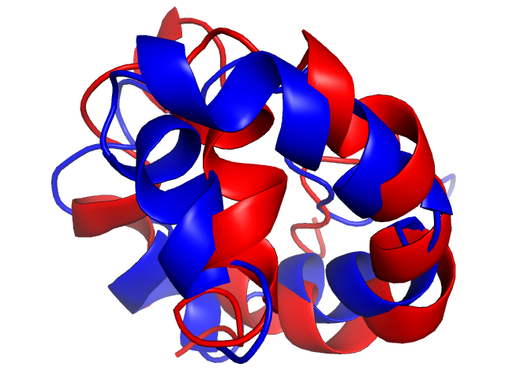
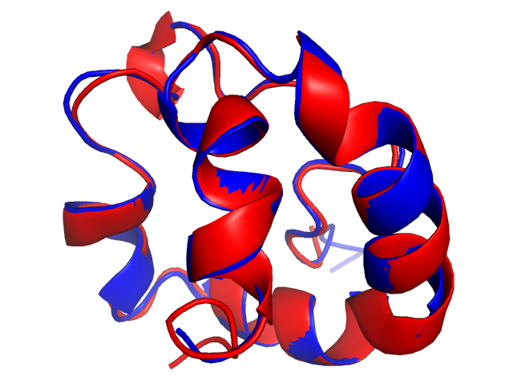

The TM-score program performs sequence-dependent superimposition to compare different conformations of the same molecule, such as when comparing the predicted and experimental structures of the same protein (or RNA). This is different from a (sequence-independent) structure alignment, such as those performed by the TM-align, RNA-align or US-align programs. The major difference is that the TM-score program assumes correspondences between residues with the same residue index, while the TM-align, RNA-align, and US-align programs by default do not make such assumptions and will try to re-establish residue correspondences by alignment.
To illustrate the different, we perform a comparison between the predicted and experimental structure of PDB 1l6h chain A. In this particular example, the structure was predicted incorrectly where the coordinates of all residues are shifted by 4 residues. The TM-score program result reflects the incorrect modeling and report a low TM-score=0.349 and a high RMSD=5.99 (lower left). On the other hand, the US-align and TM-align program will both attempt to perform a sequence-independent alignment, reporting a much higher TM-score=0.917 and lower RMSD=0.49 with a shifted sequence alignment between the model and native (lower right).
$ TMscore model_1l6hA.pdb native_1l6hA.pdb Number of residues in common= 69 RMSD of the common residues= 5.986 TM-score = 0.3486 (d0= 2.89) (":" denotes the residue pairs of distance < 5.0 Angstrom) AGCNAGQLTVCTGAIAGGARPTAACCSSLRAQQGCFCQFAKDPRYGRYVNSPNARKAVSSCGIALPTCH :: :::::::::::::::::::: ::::::: : :: : : AGCNAGQLTVCTGAIAGGARPTAACCSSLRAQQGCFCQFAKDPRYGRYVNSPNARKAVSSCGIALPTCH | $ USalign model_1l6hA.pdb native_1l6hA.pdb Aligned length= 65, RMSD= 0.49, Seq_ID=n_identical/n_aligned= 0.062 TM-score= 0.91722 (if normalized by length of Chain_1) TM-score= 0.91722 (if normalized by length of Chain_2) (":" denotes aligned residue pairs of d < 5.0 A) ----AGCNAGQLTVCTGAIAGGARPTAACCSSLRAQQGCFCQFAKDPRYGRYVNSPNARKAVSSCGIALPTCH ::::::::::::::::::::::::::::::::::::::::::::::::::::::::::::::::: AGCNAGQLTVCTGAIAGGARPTAACCSSLRAQQGCFCQFAKDPRYGRYVNSPNARKAVSSCGIALPTCH---- |
 |
 |
A prerequisite for the input of the TM-score is that the residue number (columns 12-27 of a PDB format or the _atom_site.auth_seq_id field of a PDBx/mmCIF format file) from the model and the native structure match each other. This is not true in many cases, especially when the sequence used for structure prediction and the sequence of the native structure does not match each other. For example, the RNA-puzzle round 30 corresponds to residues 239 to 326 of PDB 7bg9 chain B. The residue index of PDB file for the predicted structure model starts with 1 rather than 239. Therefore, the default result from the TM-score, RNA-align and US-align program would not have the correct alignment.
$ TMscore PZ30_Chen_1.pdb native_7bg9B.pdb There is no common residues in the input structures $ USalign PZ30_Chen_1.pdb native_7bg9B.pdb Aligned length= 80, RMSD= 3.55, Seq_ID=n_identical/n_aligned= 0.800 TM-score= 0.50751 (if normalized by length of Chain_1, i.e., LN=88, d0=3.11) TM-score= 0.51189 (if normalized by length of Chain_2, i.e., LN=86, d0=3.05) (":" denotes residue pairs of d < 5.0 Angstrom) gaaccccgccug--gaggccgcggucggcccggggcuucuccggaggcacc---cacugccaccgcgaagaguugggcucuguc-agccgcggg :: :::::: :::::::::::.::::.::...::::.. ::::..: .:. .::::::::::::::.:::::::::: ::..:: :: ga-accccg---ccgaggccgcggucggcccggggcuucucc-ggaggca-cccacu-gccaccgcgaagaguugggcucugucagccgcg-ggThere are three approaches to address this issue.
$ TMscore PZ30_Chen_1.reindex.pdb native_7bg9B.reindex.pdb Number of residues in common= 86 RMSD of the common residues= 4.434 TM-score = 0.4625 (d0= 3.05) (":" denotes the residue pairs of distance < 5.0 Angstrom) gaaccccgccgaggccgcggucggcccggggcuucuccggaggcacccacugccaccgcgaagaguugggcucugucagccgcggg :::::: :::::::::: ::::::: ::::: :::: :::::::::::::: :::::::::: :::::: gaaccccgccgaggccgcggucggcccggggcuucuccggaggcacccacugccaccgcgaagaguugggcucugucagccgcggg
$ cat align.txt >PZ30_Chen_1.pdb gaaccccgccuggaggccgcggucggcccggggcuucuccggaggcacccacugccaccgcgaagaguugggcucugucagccgcggg >native_7bg9B.pdb gaaccccgcc--gaggccgcggucggcccggggcuucuccggaggcacccacugccaccgcgaagaguugggcucugucagccgcggg $ USalign -I align.txt PZ30_Chen_1.pdb native_7bg9B.pdb Aligned length= 86, RMSD= 4.43, Seq_ID=n_identical/n_aligned= 1.000 TM-score= 0.45966 (normalized by length of Structure_1: L=88, d0=3.11) TM-score= 0.46248 (normalized by length of Structure_2: L=86, d0=3.05) (":" denotes residue pairs of d < 5.0 Angstrom) gaaccccgccuggaggccgcggucggcccggggcuucuccggaggcacccacugccaccgcgaagaguugggcucugucagccgcggg ::::::.... .::::::::::.:::::::...:::::.::::..........::::::::::::::.::::::::::...:::::: gaaccccgcc--gaggccgcggucggcccggggcuucuccggaggcacccacugccaccgcgaagaguugggcucugucagccgcggg
$ USalign -seq PZ30_Chen_1.pdb native_7bg9B.pdb Aligned length= 86, RMSD= 4.43, Seq_ID=n_identical/n_aligned= 1.000 TM-score= 0.45966 (normalized by length of Structure_1: L=88, d0=3.11) TM-score= 0.46248 (normalized by length of Structure_2: L=86, d0=3.05) (":" denotes residue pairs of d < 5.0 Angstrom) gaaccccgccuggaggccgcggucggcccggggcuucuccggaggcacccacugccaccgcgaagaguugggcucugucagccgcggg ::::::.... .::::::::::.:::::::...:::::.::::..........::::::::::::::.::::::::::...:::::: gaaccccgcc--gaggccgcggucggcccggggcuucuccggaggcacccacugccaccgcgaagaguugggcucugucagccgcggg
yangzhanglab umich.edu
| (734) 647-1549 | 100 Washtenaw Avenue, Ann Arbor, MI 48109-2218
umich.edu
| (734) 647-1549 | 100 Washtenaw Avenue, Ann Arbor, MI 48109-2218